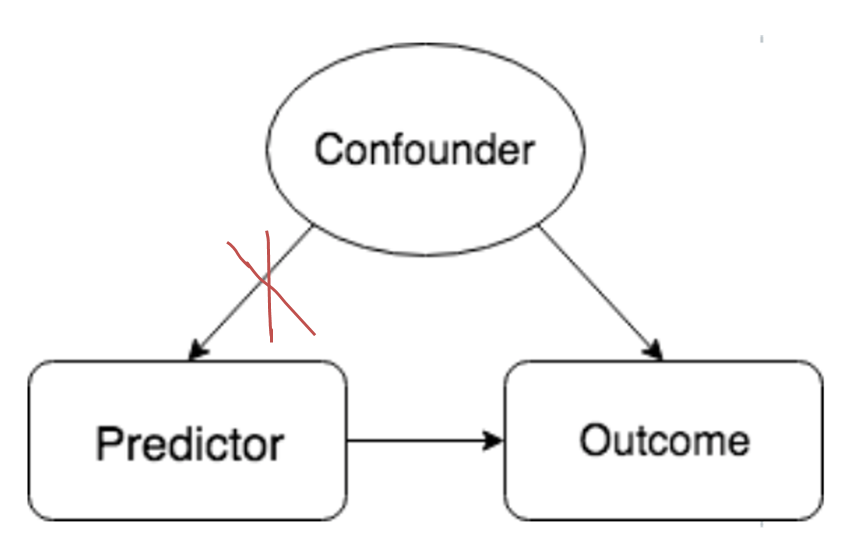
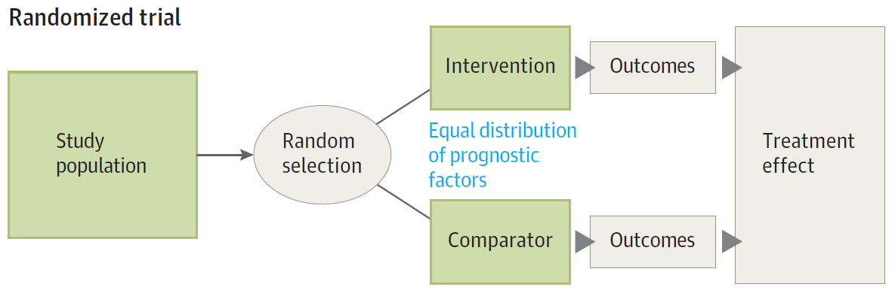
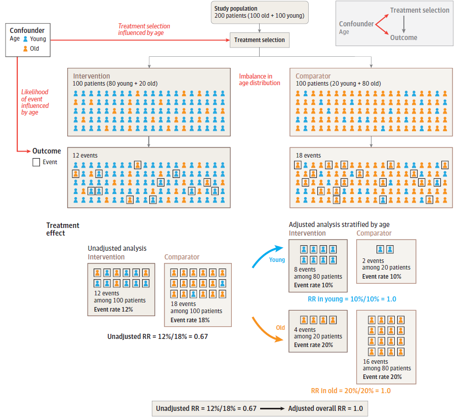
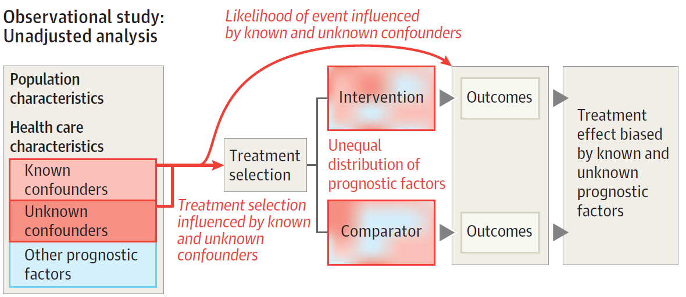
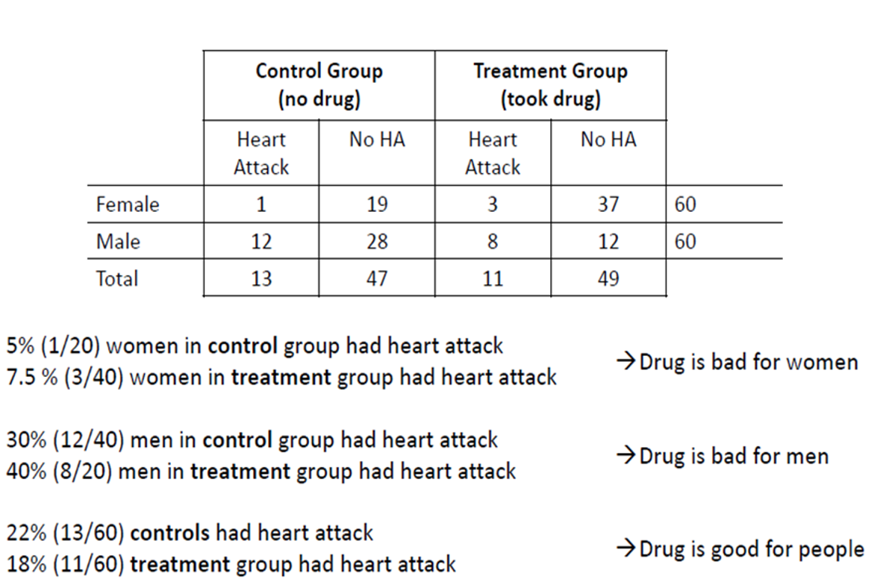
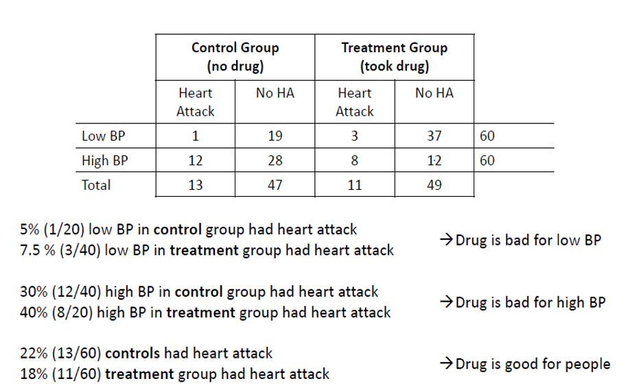

Confounding
Concepts of Confounding and Methods to control it. At the end of the session, you should be to explain (i) what confounding is, (ii) why confounding should be accounted for, and (iii) how confounding can be minimized or controlled for.
Definition
Confounding is the bias or systematic error in the estimation of true treatment (predictor) effects
Confounding is caused by a variable (“confounder”) that is related to both predictor and outcome. However, a confounder is not caused by the predictor
Comprehensive overview provided by Z Statistics
Example 1: Smoking-CHD Association confounded by Age
Example 2: Confounding by disease severity
Patients with greater disease severity (the confounder) are likely to receive more intensive therapy
Patients with greater disease severity are likely to have poor clinical outcomes
Thus, we may observe that intensive therapy is associated with poorer clinical outcomes. In other words, disease severity has distorted or confounded the estimation of the true therapy effects
Example 3: Confounding by treatment indication
Confounding caused by variables related to both treatment decision and outcomes
In clinical practice, a therapist gives Patient A Treatment A and Patient B Treatment B
We may be tempted to compare Treatment A and Treatment B by comparing the outcomes of Patient A and Patient B. Unfortunately, this comparison of treatment effects is prone to confounding (by indication)
Potential dangers of ignoring confounding by severity/treatment indication are highlighted here
Controlling for confounding
- This involves breaking or removing the connection between treatment group variable and the confounder

Study Design Method: Randomization
Large randomized trials ensure that treatment and control groups are balanced with respect to factors associated with outcomes (eg., age, sex, disease severity, and comorbidity) and they thus provide the optimal approach to address questions about treatment effects
In an RCT, an intention to treat analysis (ITT) is a method/strategy of data analysis that compares patients in the groups to which they are originally randomly allocated.
ITT ensures that the treatment groups remain similar in baseline characteristics; hence, ITT minimizes confounding
RCTs often do not mimic clinical practice because patients enrolled in an RCT can be quite different from patients in clinical practice. This may be necessary as it allows an RCT to control for confounding when estimating the true treatment effects.

Statistical Method: Regression
Regression methods condition on confounders when estimating the “true” treatment effects
Conceptually, we are averaging the treatment effects across the levels/strata of the confounder
Conditioning = Holding values (of the confounder) constant. Because the confounder is held constant at each stratum, regression analyses attempt to “level the playing field” for treatment groups
Conditioning can be done using stratification analyses or multivariable regression analyses
We adjusted or controlled for age…: Assessing the effect of one variable while accounting for the effect of another (confounding) variable. In a non-randomized study comparing the effects of treatments A and B on blood pressure reduction, the patients’ ages may have been used to select the treatment. It would be advisable in that case to control for the effect of age before estimating the treatment effect. This can be done using a regression model with blood pressure as the dependent variable and treatment and age as the independent variables (controlling for age using subtraction) or crudely and approximately (with some residual confounding) by stratifying by deciles of age and averaging the treatment effects estimated within the deciles. Adjustment results in adjusted odds ratios, adjusted hazard ratios, adjusted slopes, etc.

Comparison
Large randomized trials ensure that treatment and control groups are balanced with respect to (known and unknown) factors associated with outcomes (typically age, sex, disease severity, and comorbidity — “prognostic factors”) and thus provide the optimal approach to address questions about the benefits and harms of interventions.
Observational treatment comparisons = No treatment group randomization = More “real world” (reflective of clinical practice) = Greater risk of (known and unknown) confounding when estimating therapy effects
In observational treatment comparisons, we could use regression methods to adjust for known confounding. Hence, we are constantly haunted by the possibility that residual confounding may creep into our results. Residual confounding is the bias that remains even after statistical adjustment and it is caused by imperfectly measured confounders and unknown confounders.

Short Quiz
Question 1: Is the drug beneficial?

Question 2: Is the drug beneficial?
